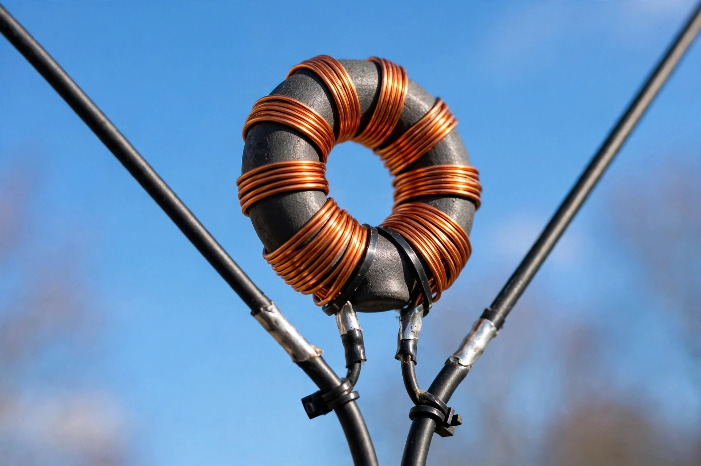

Balun

| Balun | |
|---|---|
| Type | Passive electrical transformer / transmission-line device |
| Function | Balanced ↔ unbalanced signal conversion; impedance transformation; common-mode suppression |
| Applications | Antennas, RF and audio equipment, video, measurement |
A balun (a portmanteau of balanced and unbalanced) is an electrical device that converts between a balanced signal (two signals of equal amplitude and opposite phase, neither referenced to ground) and an unbalanced signal (one signal referenced to ground). Baluns also commonly provide impedance transformation and can suppress unwanted common-mode currents.
Applications
The classic use is at the feedpoint of an antenna: a dipole is a balanced load, while coaxial cable is unbalanced. Feeding a dipole directly with coax allows RF current to flow on the outside of the cable shield, distorting the radiation pattern and causing interference; a balun blocks this common-mode current. A 1:1 balun merely converts balance, while ratio baluns (such as 4:1) also transform impedance — for example matching a folded dipole (~300 Ω) to 75 Ω line, or matching the 300 Ω twin-lead of older television installations to 75 Ω coax, the small transformer packaged in many TV antenna adapters.
Types
Transformer baluns wind two lines on a ferrite core; designs include the Ruthroff (voltage) and Guanella (current) transmission-line transformers. Choke baluns ("current baluns") simply present a high impedance to common-mode current, using coiled coax or ferrite beads over the cable. Transmission-line baluns use quarter-wave structures such as the sleeve (bazooka) balun, the folded balun, and the Marchand balun used in microwave circuits; half-wave U-baluns are common in antenna construction. Narrowband lumped-element (LC) baluns are used in RF integrated circuits, and active baluns exist for audio and instrumentation.